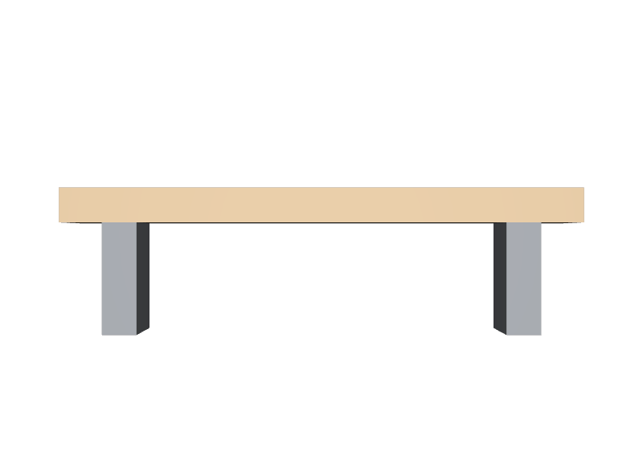

xformOpの順番を逆にする
scaleを先に書くと、移動量まで拡縮されて位置がずれます。translate→scaleの順です。
STEP 99 · 総合演習1
ここまでの内容を使って、配れるベンチを1つ作ります
今日これだけ
この演習について
新しいことは出てきません。ここまでのSTEPで扱った内容を、順番に組み合わせるだけです。作るのはベンチ1台で、そのまま他のシーンから参照して使える形に仕上げます。
手順1
from pxr import Gf, Usd, UsdGeom
geom = Usd.Stage.CreateNew("bench_geom.usda")
UsdGeom.SetStageMetersPerUnit(geom, 1)
UsdGeom.SetStageUpAxis(geom, UsdGeom.Tokens.y)
bench = UsdGeom.Xform.Define(geom, "/Bench")
geom.SetDefaultPrim(bench.GetPrim())
def box(path, translate, scale):
cube = UsdGeom.Cube.Define(geom, path)
cube.CreateSizeAttr(1)
x = UsdGeom.Xformable(cube)
x.AddTranslateOp().Set(Gf.Vec3d(*translate)) # translate → scale の順
x.AddScaleOp().Set(Gf.Vec3f(*scale))
return cube
box("/Bench/Seat", (0, 0.45, 0), (1.8, 0.12, 0.5))
box("/Bench/Leg_1", (-0.7, 0.2, 0), (0.12, 0.4, 0.4))
box("/Bench/Leg_2", (0.7, 0.2, 0), (0.12, 0.4, 0.4))
geom.Save()xformOpOrderは["xformOp:translate", "xformOp:scale"]になります。STEP 21 XformOpOrderのとおり、後ろに書いたものが先に効くので、これで「拡縮してから移動」になります。逆に書くと、移動量まで拡縮されて位置がずれます。
手順2
from pxr import Gf, Sdf, Usd, UsdGeom
look = Sdf.Layer.CreateNew("bench_look.usda")
look.defaultPrim = "Bench"
stage = Usd.Stage.Open(look)
UsdGeom.SetStageMetersPerUnit(stage, 1)
UsdGeom.SetStageUpAxis(stage, UsdGeom.Tokens.y)
stage.OverridePrim("/Bench")
for path, color in (("/Bench/Seat", Gf.Vec3f(0.72, 0.52, 0.3)),
("/Bench/Leg_1", Gf.Vec3f(0.3, 0.32, 0.35)),
("/Bench/Leg_2", Gf.Vec3f(0.3, 0.32, 0.35))):
prim = stage.OverridePrim(path)
UsdGeom.PrimvarsAPI(prim).CreatePrimvar(
"displayColor", Sdf.ValueTypeNames.Color3fArray,
UsdGeom.Tokens.constant).Set([color])
stage.Save()すべてOverridePrim、つまりSTEP 37 overです。形のファイルには一切触れていません。STEP 75 Workstream Layersで扱った分担が、そのままこの2ファイルの関係です。
手順3
from pxr import Usd, UsdGeom
contents = Usd.Stage.CreateNew("bench_contents.usda")
contents.GetRootLayer().subLayerPaths = ["bench_look.usda", "bench_geom.usda"]
UsdGeom.SetStageMetersPerUnit(contents, 1)
UsdGeom.SetStageUpAxis(contents, UsdGeom.Tokens.y)
bench = UsdGeom.Xform.Define(contents, "/Bench")
contents.SetDefaultPrim(bench.GetPrim())
contents.Save()subLayerPathsの並びが強さの順です。色のファイルを先に置いているので、色が形を上書きできます。
手順4
from pxr import Kind, Sdf, Usd, UsdGeom
entry = Usd.Stage.CreateNew("bench.usda")
UsdGeom.SetStageMetersPerUnit(entry, 1)
UsdGeom.SetStageUpAxis(entry, UsdGeom.Tokens.y)
bench = UsdGeom.Xform.Define(entry, "/Bench")
entry.SetDefaultPrim(bench.GetPrim())
prim = bench.GetPrim()
Usd.ModelAPI(prim).SetKind(Kind.Tokens.component)
prim.GetPayloads().AddPayload("bench_contents.usda", "/Bench")
prim.CreateAttribute("academy:assetName", Sdf.ValueTypeNames.String,
custom=True).Set("Bench")
prim.CreateAttribute("academy:version", Sdf.ValueTypeNames.String,
custom=True).Set("1.0")
entry.Save()STEP 73 Asset Entry Pointでまとめた4つの手順そのままです。形は一つも書いていません。
手順5
from pxr import Usd, UsdGeom
full = Usd.Stage.Open("bench.usda")
cache = UsdGeom.BBoxCache(Usd.TimeCode.Default(), [UsdGeom.Tokens.default_])
api = UsdGeom.ModelAPI(full.GetDefaultPrim())
api.SetExtentsHint(api.ComputeExtentsHint(cache))
full.Save()
print(api.GetExtentsHint())
# [(-0.9, -2.98e-09, -0.25), (0.9, 0.51, 0.25)]
print([str(p.GetPath()) for p in full.Traverse()])
# ['/Bench', '/Bench/Seat', '/Bench/Leg_1', '/Bench/Leg_2', '/Bench/AssetCam']$ usdchecker bench_geom.usda && usdchecker bench_look.usda \
&& usdchecker bench_contents.usda && usdchecker bench.usda
Success!
Success!
Success!
Success!4枚すべてが検査を通ります。STEP 78 Loftingで扱ったとおり、要約は形が出来上がったあと、いちばん最後に計算します。
結果

bench_geom.usda、色はbench_look.usdaから来ています。使う側はbench.usdaの1行を書くだけです。examples/lesson-70/bench.usda / Apple USD Tools 0.25.2 のusdrecord（Hydra Storm・Metal）/ macOS 26.5.2・Apple M4USDA → Python mapping
USDA
def Xform "Bench" ( kind = "component" )↓Python
Usd.ModelAPI(prim).SetKind("component")USDA
defaultPrim = "Bench"↓Python
stage.SetDefaultPrim(prim)USDA
metersPerUnit = 1 / upAxis = "Y"↓Python
UsdGeom.SetStageMetersPerUnit(stage, 1) / UsdGeom.SetStageUpAxis(stage, UsdGeom.Tokens.y)USDA
def Scope "Geom"↓Python
UsdGeom.Scope.Define(stage, "/Bench/Geom")USDA
prepend payload = @bench_contents.usda@↓Python
prim.GetPayloads().AddPayload("./bench_contents.usda")USDA
float3[] extentsHint = [...]↓Python
UsdGeom.ModelAPI(prim).SetExtentsHint(hint)Beginner notes
よくある間違い
scaleを先に書くと、移動量まで拡縮されて位置がずれます。translate→scaleの順です。
定義が二重になります。色の担当はoverだけです。
入口のPayloadが</Bench>を指せなくなります。
形が完成する前に計算すると、古い値が残ります。最後に計算します。
Glossary
Official references
確認日: